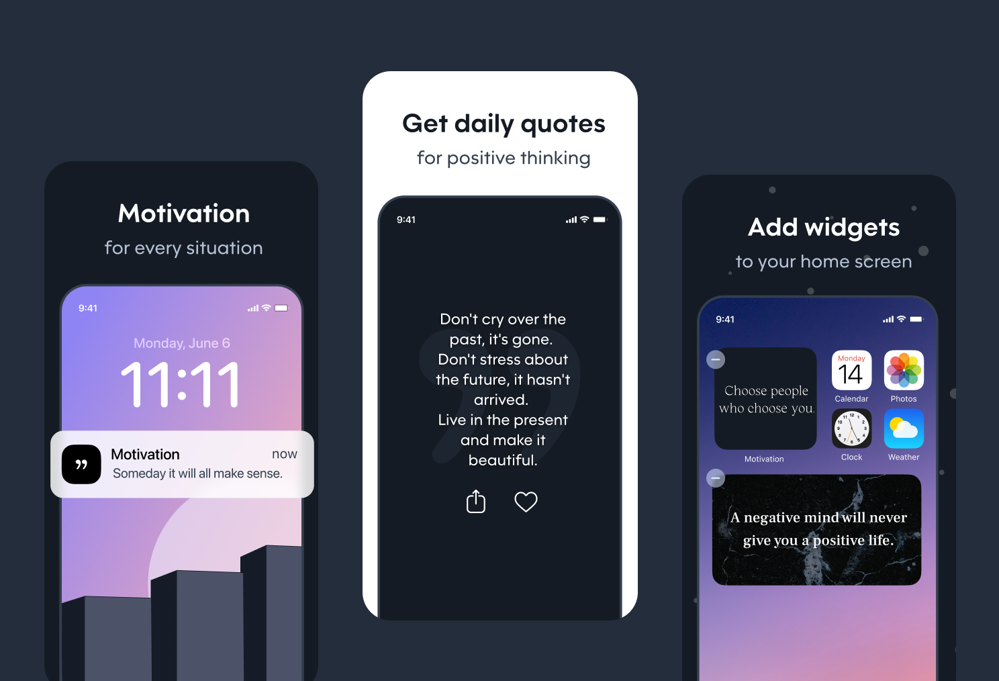

Motivation 深度盘点：一款把正能量拆成三条路径递到你眼前的语录 App
Motivation 不止是每日推一句鸡汤那么简单——应用内、小组件、通知三条路径各自独立配内容，多提醒组分时段精准送达，Affirmations 练习和签到 streak 把碎片化正念练成习惯。
开头：这 App 值得认真盘点一下
市面上的语录 App 多到什么程度？搜一下应用商店，"每日一句"类产品不下几十个，界面大同小异，每天推一句，用完即走，没人记得住谁是谁。Motivation 从同类里杀出来的路数不太一样——它不满足于"每天给你一条"，而是把同一份正能量内容，拆成三条独立的送达路径，让它们在你一天中的不同时刻、不同设备上、不同场景里，以不同的口味出现。

这篇盘点就按它的能力域一层层铺开，你会发现 Motivation 做的事情，远比"一个推语录的 App"丰富得多。
能力域一：分类系统——18 个细分主题，选你此刻需要的
Motivation 的语录不是一锅端的"励志名言大杂烩"，而是按主题切成了 18 个分类，包括状态、自信、职场、压力、自律、感恩、情绪、快乐等等。这意味着什么？意味着你不需要在几百条相似文案里翻找今天想听哪句——告诉它你此刻的心情和场景，它就从对应的分类里出内容。
这个设计看似朴素，却是整条产品逻辑的基石。后面我们会看到，三条送达路径各自可以独立勾选分类，小组件配一组，早上提醒配一组，睡前提醒配另一组——如果没有分类系统，这一切都无从谈起。
能力域二：三条送达路径，每条独立选内容
这是 Motivation 最核心也最容易被忽视的设计。绝大多数同类 App 要么只做应用内阅读，要么只做每日通知推送，两条路径各说各的。Motivation 把应用内、小组件、通知三条路径的内容偏好完全解耦，你可以：
- 应用内：开启全部分类，有空的时候慢慢翻
- 桌面小组件：只勾"自信 + 感恩"，常驻主屏一眼能看到
- 通知提醒：下午那一组推"职场 + 压力"，帮你扛过倦怠期
三条路径各自独立配置分类、独立设置刷新频率、独立选主题配色。改小组件的分类不会影响应用内读什么，改提醒的分类不会影响小组件显示什么。同一款应用、同一句语录，在不同时刻、不同入口、配不同口味——这才是它跟其他语录 App 真正拉开差距的地方。如果你想先看看它整体长什么样，可以去官网翻一翻介绍和截图，比纯读文档有感觉。
能力域三：多提醒组——早中晚各有各的心情
单条通知推送已经不够用了。Motivation 允许你创建多个提醒组，每个组配独立的时间、独立的分类偏好，互相不干扰。官方推荐的三组搭配是这样的：
| 提醒组 | 时间 | 分类建议 | 目的 |
|---|---|---|---|
| 早安组 | 起床后 8:00 | 状态 / 励志 / 自信 | 睁眼先被拍醒 |
| 午间组 | 下午 13:30 | 职场 / 压力 / 自律 | 饭困回来打一针 |
| 睡前组 | 21:30 | 感恩 / 情绪 / 快乐 | 睡觉前给自己说句软话 |
关于时间重叠这件事官方特意提醒过——别让两个组在同一时刻推送，两条通知同时到不仅突兀，还会额外消耗 iOS 的本地通知配额。错开时间、错开分类，让每条提醒都有自己的档期。
刚开始用的话一个提醒组就够了，先养成习惯；用了一两周觉得好，可以拆成两个时段；用久了三组甚至更多都没问题。关键原则是：提醒服务你，不是你服务提醒。烦了就减，不够就加——提醒组的完整配置图文步骤，Motivation 文档里有现成的。
能力域四：小组件的深度定制——不只是放上去那么简单
把小组件加到桌面或锁屏，只是第一步。打开 Motivation 的 Profile → Widgets 页面，你会发现每个小组件都可以单独配置：
- 分类选择：和应用内、提醒互相独立，比如小组件只显示"自信 + 感恩"
- 主题配色：从预设主题里挑，决定背景色、字体、排版风格
- 刷新频率：每小时、每 6 小时、每天一次——刷新越频电量耗得越多，但看到新内容的机会也越大
- 自定义小组件：除了编辑已有的，还能直接在 App 内创建新的 Standard 或 Custom 预设，回到桌面添加时直接选
锁屏小组件（iOS 16+ 专属）的体验尤为出色——不用解锁就能看到内容，早上划开手机第一眼就是今天的正能量。找不到小组件怎么办？刚从官方下载装好的 App 有时要等几个小时才出现在小组件列表里，重启手机或者先打开一次 Motivation 应用，基本就能刷新出来。

能力域五：Affirmations 练习 + 签到 streak——把内容变成习惯
很多人下载语录 App 三分钟热度之后就删了，Motivation 试图通过两个机制把"偶尔看看"变成"每天打开"。
第一个叫 Affirmations 练习——打开应用，做一分钟的正念练习，跟着引导说几句肯定自己的话。它不是冥想类 App，不走复杂的正念流程，就是短平快、一分钟搞定，适合碎片时间。
第二个叫签到 streak——打开应用就算续上连续天数，不需要点专门的签到按钮，也不需要完成任何任务。最快的签到路径就是：划开手机看到小组件 → 点一下 → 应用打开 → 关掉，10 秒搞定。进阶一点的做法是顺便翻两条语录、收藏一条今天最喜欢的，把签到从形式变成真的获得。
断了一天怎么办？官方的态度很坦诚——断了就断了，别纠结。连续 20 天 vs 中断过几次总计 30 天，后者更真实。
短板也得说
盘点到这里，Motivation 的优势已经很清楚了，但客观讲它也有局限。
首先，语录库本身是英文体系翻译过来的，虽然分类做了不少，但整体内容量不算大，高频使用的话可能会遇到重复——官方自己也没把它定位成"无限题库"，而是"用分类和送达路径提升有限内容的重复价值"。其次，没有社区、没有用户生成内容（UGC）、没有打卡分享，这意味着你没法和其他用户互动，纯粹是一个人的事——有人觉得这是"安静"，有人觉得这是"无聊"，看你的偏好。第三，平台支持主要集中在 iOS 和 Android，桌面端（Mac、Windows）几乎没怎么跟上，跨平台体验比较碎。
什么样的人该用它
盘点完能力面和短板，最后给一个清晰的用户画像。
第一类：想养成每日正念小习惯但又不想投入太多的人。冥想 App 太重、太耗时，Motivation 的 Affirmations 一分钟搞定，小组件和提醒帮你把习惯固定下来，没有入门门槛。
第二类：觉得"每天推一句鸡汤"已经不够的人。普通语录 App 只有一条路径，Motivation 把同一份内容拆成三条独立配置的路径，让正能量在你一天中不同的时刻用不同的方式出现——不是"给你一条"，而是"在你需要的时候，用你愿意接受的方式给你一条"。
第三类：喜欢折腾个性化设置的极客用户。多提醒组、小组件独立分类、主题配色、刷新频率——每一层都可以调，每一层都和其他层解耦，适合喜欢把产品调到完全贴合自己生活节奏的人。
如果上面三类里有你，可以先去文档站翻翻更细的用法教程，从添加第一个小组件或者设置第一个提醒开始，慢慢摸索属于自己的那一套搭配。
相关资料我同步到了三个仓库：GitHub 主库、Gitee 镜像、GitCode 同步——每个仓库的对应目录里都能找到这款软件的完整文档。